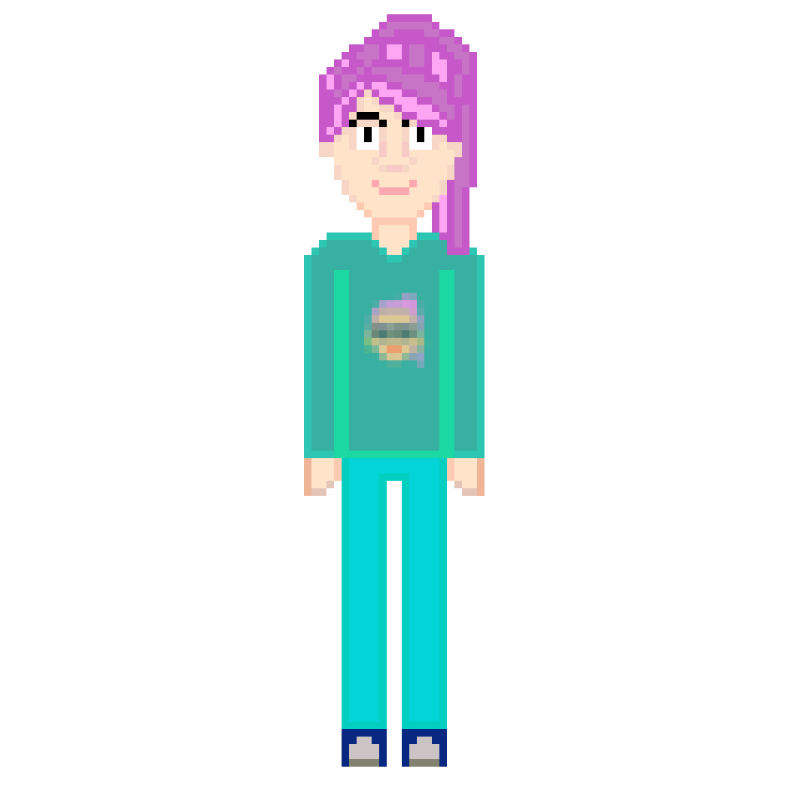
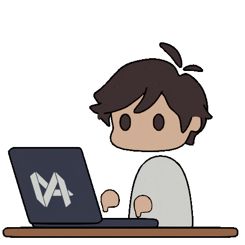

SUSPECTS BEHIND THE PROJECT
TRIVIA
The developers of this project are 3rd Year Computer Science
students from New Era University.
The Simple Java Compiler serves as the Final Project for
the Theory of Programming Languages Course (CCS314-18).
Thank you and Feel free to explore the site.

Marianne Edic
The Duck
She quacks alot notifying his slow turtle companion to do his tasks.
This girl is fast and always finish her tasks quickly with flying colors.
She is incharge of the building the most important feature/goal of the
project. Also check the vanilla code
(Java base program) she created as well as
her fun demo of it.

Vem Aiensi Marasigan
The Turtle
He is the duck's slow companion.
A guy who takes so long to learn stuffs.
He maybe slow, but he actually does the job in a pleasing manner.
This guy is responsible for the UI's design as well as the assets
that were used in the project. He's also the reason why this project
took longer than expected XD
Tip:
Click profile pictures to visit their github page.